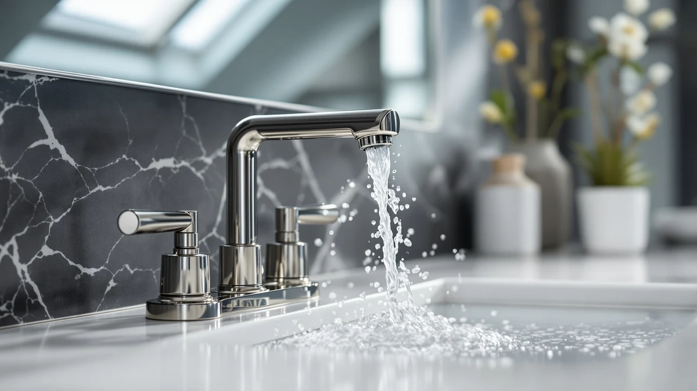

Kohler Bathroom Faucets vs Moen: Which Is Better? (2026)
Prices and picks verified as of October 2026. Independent, reader-supported reviews.


Things to Know Before You Buy
- Kohler backs most bathroom faucets with a limited lifetime warranty on the finish and mechanism, matching the coverage Moen offers across its current lineup.
- Kohler's bathroom collections typically list from around $120 up to $400 or more depending on finish and spout style, while the Moen models in this comparison span $54.95 to $87.12, a gap that often matters more than brand loyalty for a vanity remodel budget.
- Spot Resist and brushed finishes from both brands hide fingerprints and water spots better than polished chrome, though hard water areas still need regular wiping no matter which brand you choose.
- Single-handle faucets, common across Moen's lineup and several Kohler collections, install faster than widespread two-handle sets, so check your existing hole configuration before buying either brand.
- Ceramic disc valves are standard on nearly every current Kohler and Moen bathroom faucet, the main reason both brands rarely drip within the first several years of ownership.
Picking between kohler bathroom faucets vs moen usually comes down to how much you want to spend and whether a specific finish or collection matters more than price, since both brands build around the same core valve technology and back it with strong warranties. Kohler leans into design-forward collections with premium pricing, while Moen spreads its lineup across more affordable single-handle models that cover most vanity remodels.
This guide compares the two brands using Kohler's widely sold bathroom collections, including Purist, Simplice and Cachet, against five current Moen faucets priced between $54.95 and $87.12, based on published specs, warranty terms and patterns across verified owner reviews. We did not test these faucets in a lab. We compared manufacturer specifications and hundreds of verified owner reviews to show where each brand earns its price and where it falls short.
Quick Answer
For most bathroom remodels, Moen wins on value: the five models in this comparison cost $54.95 to $87.12 and use the same ceramic disc valve technology found in Kohler's pricier collections. Kohler earns its higher price when you want a specific design language, such as Purist's minimalist cylinders or Cachet's softer curves, that Moen does not replicate. If budget drives the decision, start with the Moen Idora at $54.95.
What is Kohler Bathroom Faucets?
Kohler is a Wisconsin-based plumbing manufacturer that has built bathroom fixtures since 1873, and its faucet lineup spans budget single-handle models to design-forward collections like Purist, Simplice, Forte and Cachet. Comparing kohler bathroom faucets and moen head to head starts with Kohler's broader price spread: collections can list anywhere from roughly $120 for a basic centerset to $400 or more for a widespread faucet in a premium finish such as Vibrant brushed moderne brass.
Most current Kohler bathroom faucets run on a ceramic disc valve, the same valve technology used in the brand's kitchen faucets, and Kohler backs the mechanism and finish with a limited lifetime warranty for the original owner. Reviewers researching Kohler's bathroom collections consistently mention distinctive design details, sculptural spouts, knurled handles and mixed-metal finishes, that set the brand apart from more utilitarian competitors.
The tradeoff is price and availability. Kohler's design-led collections cost more than comparable Moen models, and some finishes or spout styles sell mainly through plumbing supply retailers rather than general marketplaces. Owners who want a specific aesthetic, or who already use Kohler fixtures elsewhere in the bathroom, tend to find the premium worth paying. Shoppers focused purely on function often look elsewhere first.
What is Moen?
Moen is a Michigan-based fixture maker owned by Fortune Brands Innovations, and its bathroom faucet lineup is one of the largest on the market, spanning builder-grade models under $40 to designer sets well over $300. The five Moen faucets in this kohler bathroom faucets vs moen comparison, the Idora, Wellton, Beric, Karis and Halle, all use Moen's Spot Resist Brushed Nickel finish, a coating designed to hide water spots and fingerprints between cleanings rather than eliminate them entirely.
Every model here runs on a ceramic disc valve, the same core mechanism Moen puts into faucets three times the price, which is why the cheaper models in this lineup rarely feel noticeably worse in daily use than the more expensive ones. The differences across these five faucets show up mostly in spout height, handle style and finish name rather than in the valve doing the actual work.
Moen backs its bathroom faucets with a limited lifetime warranty covering both the finish and the mechanical parts for as long as the original buyer owns the home. Owner reviews of these models frequently describe straightforward installation with standard connections, though a few note the brushed finish shows water spots faster than polished chrome in hard water regions.
Head-to-Head: Build Quality & Durability
Build quality between these two brands starts at the valve. Kohler and Moen both rely on ceramic disc technology across their current bathroom lineups, the component most responsible for keeping a faucet leak-free for a decade or more. Kohler markets its mechanism as a ceramic valve without publishing an exact cycle rating, and Moen takes the same approach across the Idora, Wellton, Beric, Karis and Halle models compared here.
Where the brands diverge is body material and overall heft. Kohler's premium collections, Purist and Simplice in particular, use heavier brass construction that several reviewers describe as noticeably more solid at the handle than comparable Moen faucets. That extra weight does not automatically mean a longer lifespan, but it does change how the faucet feels during daily use.
Finish durability runs closer between the two brands than price would suggest. Moen's Spot Resist coating and Kohler's own finish lines, including its Vibrant series, both carry warranties against tarnishing and corrosion, and owner reviews for both brands describe finishes holding their color for five or more years of normal cleaning. Hard water buildup affects both brands equally and depends more on your local water supply than on which name is on the handle.
Head-to-Head: Price & Value
Price is where kohler bathroom faucets vs moen separates most clearly. The five Moen faucets in this comparison range from $54.95 for the Idora to $87.12 for the Halle, a spread of about $32 that mostly reflects spout style and handle configuration rather than a real jump in core quality. Kohler's bathroom collections typically start closer to $120 and climb past $300 for premium finishes and widespread configurations.
That gap only makes financial sense if you specifically want one of Kohler's design-led collections, or a finish Moen does not offer in this range. For a straightforward vanity replacement with no unusual finish requirements, the Moen lineup delivers the same ceramic disc reliability Kohler owners report, at roughly a third of the cost.
Head-to-Head: Use Experience
Day to day, handle design and spout reach make the biggest difference between these faucets, not brand loyalty. Several Kohler collections favor sculptural, single-lever designs with a noticeably longer lever arm, which reviewers say makes temperature adjustment easier with a wet or soapy hand. Most Moen models in this comparison use a shorter, more compact handle that still operates with one hand but takes up less counter space.
Spout height and reach vary more within each brand's own lineup than between Kohler and Moen as a whole. The Moen Halle, Karis and Beric all sit slightly taller than the Idora and Wellton, closer to what several Kohler collections offer as standard, so a compact Moen model remains the better fit for a shallow vanity no matter which Kohler collection you set it against.
Water flow and aerator noise read as comparable across both brands in verified reviews, with no consistent pattern of one brand running quieter or stronger. Installation experience favors whichever faucet matches your existing hole configuration and countertop cutout, since switching between a single-hole and widespread setup adds real time regardless of brand.
When to Choose Kohler Bathroom Faucets
Choose a Kohler faucet if a specific design language matters more than price: Purist's minimalist cylinders, Cachet's softer curves, or a mixed-metal finish that your Moen options simply do not offer. Kohler also makes sense if you are matching a vanity faucet to other Kohler fixtures already installed in the same bathroom, since finish names and tones carry across the brand's full catalog.
Budget for roughly $120 to $400 depending on collection and finish, and expect to shop plumbing supply retailers for some configurations rather than general marketplaces. If you want the heavier handle feel several reviewers associate with Kohler's premium lines, and you are not holding to a strict remodel budget, Kohler is worth the premium.
When to Choose Moen
Choose a Moen faucet from this lineup if your priority is value without sacrificing the core reliability that keeps a bathroom faucet leak-free for years. The Idora at $54.95 makes sense for a rental unit, guest bathroom or any remodel where you are replacing multiple fixtures on a set budget. The Wellton, Beric, Karis and Halle step up in price by $13 to $32 over the Idora, each adding a different spout shape or handle style without changing the underlying valve technology.
Moen also fits well if you already own other Moen fixtures in the same finish and want a matching look across the bathroom. Spot Resist Brushed Nickel appears across enough of the lineup that mixing models from different price tiers rarely looks inconsistent.
Our Top Picks
If you want a specific recommendation instead of working through every comparison point above, these three Moen models cover the main scenarios most shoppers face.

Editor’s Pick
Moen Idora Spot Resist Brushed
Best overall value: the same ceramic disc reliability as pricier Kohler collections, for under $55.
$54.95
Check Price on Amazon
Best Value
Moen Wellton Spot Resist Brushed
Best for a slightly taller spout without stepping far outside Moen's budget-friendly price range.
$67.99
Check Price on Amazon
Premium Choice
Moen Beric Spot Resist Nickel
Best for a nickel finish and heavier handle feel closer to what Kohler's pricier lines offer.
$75.75
Check Price on AmazonIs Kohler or Moen better for a bathroom faucet?
Neither brand is universally better.
Why are Kohler faucets more expensive than Moen in this comparison?
Kohler's bathroom collections, such as Purist and Simplice, carry design and material premiums, sculptural spouts, heavier brass bodies and mixed-metal finishes, that push prices past $200 in many configurations.
Frequently Asked Questions
Is Kohler or Moen better for a bathroom faucet?
Neither brand is universally better. Kohler offers more design-forward collections and heavier premium builds, while Moen delivers the same ceramic disc reliability at a lower price across most of its lineup. For a straightforward vanity remodel, Moen usually covers what you need; for a specific design statement, Kohler's collections go further.
Why are Kohler faucets more expensive than Moen in this comparison?
Kohler's bathroom collections, such as Purist and Simplice, carry design and material premiums, sculptural spouts, heavier brass bodies and mixed-metal finishes, that push prices past $200 in many configurations. Moen's lineup here spans $54.95 to $87.12 because most of its bathroom faucets use simpler single-handle designs and more common finishes.
Do Kohler and Moen bathroom faucets use the same valve technology?
Both brands build their current bathroom faucets around a ceramic disc valve. Neither publishes an identical cycle rating for every model, but the underlying principle is the same across both brands, which is why owners of either brand report similar drip-free reliability over time.
How long do Kohler and Moen bathroom faucets typically last?
Verified owner reviews for both brands describe faucets running leak-free for five to ten years or more under normal household use, largely because ceramic disc valves resist the wear that caused older rubber-washer faucets to drip. Water hardness in your area affects finish and valve lifespan more than brand choice does.
Can I install a Kohler or Moen faucet myself?
Single-handle Moen models like the Idora, Wellton and Karis generally install faster because they use one hole and fewer connections. Several Kohler widespread collections need three separate holes at set spacing, so measure your existing vanity before buying either brand.
Final Verdict
Kohler bathroom faucets vs Moen comes down to a simple tradeoff: Kohler's collections cost more and look it, while Moen's lineup delivers the same ceramic disc reliability for a fraction of the price. For most vanity remodels, Moen is the better starting point, and the Idora at $54.95 covers the basics without asking you to compromise on the valve technology that actually determines how long a faucet lasts. Save the Kohler premium for a bathroom where a specific design collection is the whole point.